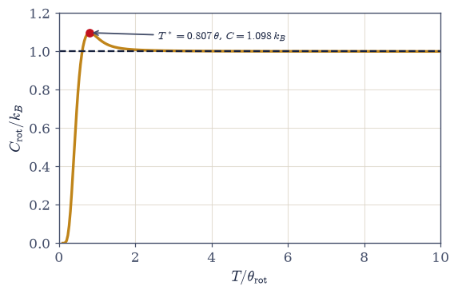
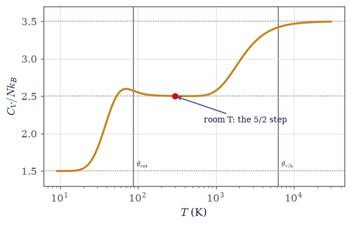
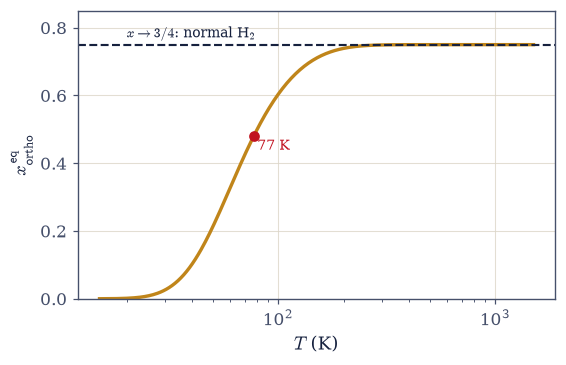
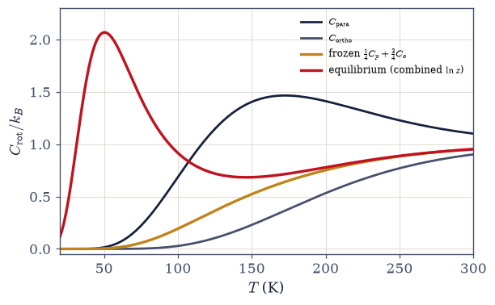

7.6 Molecules: Rotation, Vibration, and the Heat-Capacity Staircase#
Notebook overview#
Movement I closes with molecules, and with the payoff its two previous notebooks were built to fund. The qubit gave us one quantum switch (a gap that freezes out); the oscillator gave another, plus the scale \(\theta = \hbar\omega/k_B\) that decides when each switch flips. A diatomic molecule wires several such switches in series: translation (classical at any laboratory temperature — Volume V’s \(\tfrac32\), invoked), rotation with its own quantum \(\theta_{\text{rot}} = \hbar^2/2Ik_B\), and vibration at \(\theta_{\text{vib}} = \hbar\omega/k_B\) far above it. Because \(\theta_{\text{rot}} \ll \theta_{\text{vib}}\), the heat capacity climbs a staircase — \(\tfrac32 \to \tfrac52 \to \tfrac72\) in units of \(Nk_B\) — that nineteenth-century chemistry measured and could not explain: equipartition, which cannot switch anything off, demands \(\tfrac72\) at every temperature, and the stubborn room-temperature \(\tfrac52\) of real diatomics was what Maxwell in 1875 called the gravest difficulty of the molecular theory. The resolution is the freezing of §7.5, now with two thresholds, and we assemble the full curve for H₂ and walk its plateaus numerically.
The rotor itself deserves (and gets) its own treatment, because it is richer than the oscillator in two instructive ways. Its level spacing grows with \(J\), so its heat capacity does not merely rise to the classical value but overshoots it — a hump peaking at \(1.098\,k_B\) near \(T = 0.81\,\theta_{\text{rot}}\), a calorimetric fingerprint as diagnostic as the Schottky bump of §7.4. And its classical limit carries a measurable memory of discreteness: \(z \to T/\theta + \tfrac13 + \theta/15T + \dots\) (Mulholland’s Euler–Maclaurin bridge), the rotor’s version of the Wigner correction of §7.5.
The centerpiece is hydrogen. The two protons are identical spin-\(\tfrac12\) fermions, so the total wavefunction must be antisymmetric under their exchange (§6.20) — and since exchange acts on the rotational factor as the parity \((-1)^J\) and on the nuclear-spin factor as \(\pm1\) (triplet or singlet, §6.19), the Pauli principle deletes half of each ladder: para-hydrogen is even-\(J\) with the nuclear singlet, ortho-hydrogen is odd-\(J\) with the triplet, weight 3. The restricted sums deliver three results in sequence: the equilibrium ortho fraction (\(\tfrac34\) at high temperature (“normal hydrogen”) and \(0\) at low); the classical symmetry number \(\sigma = 2\), derived rather than decreed, the movement’s second classical convention turned theorem, after the \(h\) of §7.5; and Dennison’s 1927 resolution of the great H₂ heat-capacity puzzle — nuclear-spin conversion is so slow that cooled hydrogen keeps its room-temperature 3:1 composition, so experiment measures a frozen mixture utterly different from the equilibrium curve, and taking the Pauli postulate seriously (rather than collecting better data) is what closed a decade of confusion and confirmed proton spin from calorimetry. The engineering coda prices all this in dollars: normal liquid hydrogen’s ortho→para conversion heat exceeds its vaporization enthalpy, so an uncatalyzed tank boils itself away — which is why every LH₂ plant, and every rocket that flies on hydrogen, runs the liquefaction over a spin-conversion catalyst.
Conventions (this notebook). Working units \(k_B = 1\) with temperatures in Kelvin wherever a real molecule is on stage; molar restorations (\(R = 8.314\) J mol⁻¹K⁻¹) appear in the Dennison and LH₂ sections. Rotor sums state their \(J_{\max}\) and obey the convergence rule \(J_{\max} \gg \sqrt{T/\theta}\) (the occupied levels reach \(J \sim \sqrt{T/\theta}\) — like the trap of §7.5, it bites at high temperature). Heat capacities come from the two-derivative chain \(C = \partial_T\big(T^2\,\partial_T\ln z\big)\) by central differences with stated relative steps; the finite-difference dust this leaves at deep-freeze temperatures (occasional \(10^{-10}\)-level negatives) is noted where it appears, not hidden. Exercises 1–4 treat the rotor as heteronuclear (no exchange symmetry); the homonuclear physics enters deliberately with ortho/para in Exercise 5.
How to read the checks. Each exercise closes with a
validatecall against an independent fact: the rotor sum converging under its stated \(J_{\max}\) rule (and failing without it); Mulholland’s \(\tfrac13 + \theta/15T\) against the measured \(z - T/\theta\); the hump’s location and height fromminimize_scalaragainst the known \(0.807\,\theta\) and \(1.098\,k_B\); the staircase waypoints at 20/50/300/6000 K; the equilibrium ortho fractions at three temperatures; \(z_{\text{even}}/z_{\text{full}} \to \tfrac12\) to four digits; the Dennison pair (\(2.07\,k_B\) equilibrium vs \(0.004\,k_B\) frozen at 50 K); and the conversion-to-vaporization ratio \(1.21\). A ✓ is strong evidence; a ✗ is a prompt to locate the discrepancy.Scope. The diatomic gas as switches in series, and hydrogen’s exchange physics. Vibration is invoked from §7.5 (its
heat_capacityrestated in Setup, not re-derived); translation from §5.6; the proper ensemble derivation of the statistics is §7.7; coupled oscillators and Debye are §7.16. See Pathria & Beale (Ch. 6); McQuarrie, Statistical Mechanics (Chs. 6, 8); Dennison (1927). Cross-reference §6.14/§6.15 (the angular-momentum spectrum and its \(2J+1\)), §6.19 (the singlet and triplet), §6.20 (exchange antisymmetry, applied here to nuclei), §7.5 (the vibrational switch and the convention-to-theorem arc), §5.6 (translation), and forward to §7.7, §7.8, §7.16.
Theory in brief#
The rigid rotor at temperature#
A rigid diatomic rotor has the angular-momentum spectrum of §6.14/§6.15: levels labelled by \(J = 0, 1, 2, \dots\) with energy and degeneracy
where the \(2J+1\) is the \(m\)-multiplet of a given \(J\) and \(\theta_{\text{rot}} = \hbar^2/2Ik_B\) is the rotational quantum expressed as a temperature. The scales decide who gets to see any of this: \(\theta_{\text{rot}} = 87.5\) K for H₂, \(15.2\) K for HCl, \(2.9\) K for N₂, \(2.1\) K for O₂. The \(1/I\) is doing the work — for every gas but hydrogen the rotational quantum lies far below the boiling point, so rotation looks classical in any laboratory. Hydrogen’s tiny moment of inertia makes it the one molecule whose rotational quantum shows, which is precisely why it became the battleground below.
The classical limit and Mulholland’s correction#
At high temperature the sum blurs into an integral: substituting \(u = J(J+1)\theta/T\) turns \(\sum(2J+1)e^{-\theta J(J+1)/T}\) into \((T/\theta)\int_0^\infty e^{-u}du\), so \(z \to T/\theta\) — two classical rotational degrees of freedom, each worth \(\tfrac12 k_BT\). The approach is measurable and has a name:
Mulholland’s Euler–Maclaurin expansion. The discreteness never fully leaves \(z\): it survives as an additive \(\tfrac13\) (and a \(\theta/15T\) tail), exactly as \(\hbar\) survived in the \((\hbar\omega)^2/12k_BT\) of §7.5. We measure both terms.
The rotational hump#
The heat capacity follows from the two-derivative chain \(C = \partial_T(T^2\,\partial_T\ln z)\), and its shape is a fingerprint:
Frozen below \(\theta\) (the first gap is \(E_1 - E_0 = 2k_B\theta\), whence the \(e^{-2\theta/T}\)), classical far above — but in between the rotor overshoots the plateau it will settle on. The reason is the spacing law: rotor gaps \(2\theta(J+1)\) grow with \(J\), unlike the oscillator’s even rungs, so just past freezing the ladder is locally denser than the classical continuum “expects” and the system briefly absorbs heat super-classically before the widening gaps rein it in. Like the Schottky bump of §7.4, the hump is spectroscopy done with a calorimeter.
The staircase#
Wiring the switches in series gives the diatomic heat capacity,
and for H₂ (\(\theta_{\text{rot}} = 87.5\) K, \(\theta_{\text{vib}} = 6300\) K) the curve climbs \(\tfrac32 \to \tfrac52 \to \tfrac72\) with room temperature sitting squarely on the \(\tfrac52\) step. Equipartition demands \(\tfrac72\) at all temperatures; the measured \(\tfrac52\) is what Maxwell named the gravest difficulty of the molecular theory, and it fell to nothing more exotic than quantized level spacing. Honesty note: real H₂ dissociates near 3800 K, so the \(\tfrac72\) plateau is asymptotic for the model and unreachable for the molecule — the curve is still exact for the model, and N₂/O₂ tell the same story at their own \(\theta\)’s.
Ortho and para hydrogen: Pauli dictates the spectrum#
H₂’s two protons are identical spin-\(\tfrac12\) fermions, so the total wavefunction must change sign under their exchange (§6.20). Exchange acts on the rotational factor as parity \((-1)^J\) and on the nuclear-spin factor as \(+1\) (triplet, symmetric) or \(-1\) (singlet, antisymmetric) — the two-spin algebra of §6.19, applied to nuclei. Antisymmetry of the product therefore forces the pairing:
Half of each species’ rotational ladder is not suppressed but absent — the Pauli principle legislating a thermodynamic spectrum. The equilibrium ortho fraction runs from \(\tfrac34\) at high temperature (the 3:1 “normal hydrogen” of the nuclear weights) to \(0\) at low (everything into \(J = 0\), which is para).
The symmetry number, derived#
Classical statistical mechanics divides a homonuclear rotor’s \(z\) by \(\sigma = 2\) “because the molecule looks the same after half a turn.” The quantum bookkeeping derives the rule:
Each parity class holds exactly half the classical states at high temperature, so the classical fudge factor is a quantum theorem. This is the movement’s ledger filling up: §7.5 derived the \(h\) in the measure, this notebook derives the \(\sigma\), and §7.8 will derive the \(N!\).
Dennison’s resolution: equilibrium vs frozen#
The 1920s crisis: measured H₂ heat capacities disagreed with the (correct!) equilibrium calculation. The missing physics is kinetic — ortho↔para conversion requires a nuclear spin flip, which ordinary collisions cannot provide, so cooled hydrogen keeps its room-temperature 3:1 composition on laboratory timescales. Experiment therefore measures the frozen mixture while theory, innocently, computed equilibrium:
and the two are not close: at 50 K the equilibrium curve carries a large conversion peak (\(2.07\,k_B\) — the composition itself changes with \(T\), a reaction-like heat) while the frozen mixture is essentially dead (\(0.004\,k_B\)). Dennison’s 1927 insight — posit the frozen ratio — reconciled theory and experiment at a stroke, and stands as one of the earliest confirmations of proton spin-\(\tfrac12\) and Fermi statistics, delivered by calorimetry. Paramagnetic catalysts, which do provide the spin flip, restore the equilibrium curve.
The engineering coda: why rocket fuel is catalyzed#
Every ortho molecule relaxing to para releases its \(J{=}1\) rotational energy, \(2k_B\theta_{\text {rot}}\) per molecule:
so liquefied normal hydrogen carries more internal conversion heat than its own latent heat of vaporization: left uncatalyzed, the tank slowly converts, self-heats, and boils away its entire inventory. Every LH₂ plant runs the gas over an ortho–para catalyst during liquefaction. Quantum statistics, priced in boil-off.
Setup#
import matplotlib.pyplot as plt
import numpy as np
from scipy.optimize import minimize_scalar
from ecp import draw, validate
ACCENT, INK, SOFT = draw.ACCENT, draw.INK, draw.SOFT
RED = "#c1121f"
# Conventions: k_B = 1 (heat capacities per molecule, in units of k_B);
# temperatures in Kelvin whenever a named molecule is on stage; molar restorations via
# R = 8.314 J/(mol K) in the Dennison/LH2 sections. Rotor sums state J_max and obey
# J_max >> sqrt(T/θ) (occupied levels reach J ~ sqrt(T/θ): the trap bites at HIGH T).
# Finite-difference steps are RELATIVE (h = 1e-3 T), stated in C_from_lnz.
THETA_ROT_H2 = 87.5 # K — hydrogen's rotational quantum
THETA_VIB_H2 = 6300.0 # K — hydrogen's vibrational quantum
R_GAS = 8.314 # J/(mol K)
def z_rotor(T, theta, parity=None, J_max=None):
"""The rigid-rotor partition function Σ (2J+1) e^(−θ J(J+1)/T), optionally parity-restricted.
Implements eq-rotor-Z as a degeneracy-weighted sum over a numpy.arange of J,
with boolean parity masking selecting the even (para) or odd (ortho) ladder when
requested — the restriction is Pauli's, not thermal (Exercise 5). J_max defaults
to ceil(8·sqrt(T/θ)) + 20: the occupied levels reach J ~ sqrt(T/θ), so the tail
beyond the default carries weight below e^(−60) at any T; Exercise 1 demonstrates
the failure of an undersized J_max at high temperature.
Parameters
----------
T : float
Temperature (same units as theta).
theta : float
The rotational quantum θ_rot = ħ^2/(2 I k_B).
parity : str, optional
None for the full ladder (default), 'even' for para, 'odd' for ortho.
J_max : int, optional
Truncation; None (default) applies the stated rule.
Returns
-------
float
The (restricted) rotational partition function.
"""
if J_max is None:
J_max = int(np.ceil(8.0 * np.sqrt(T / theta))) + 20
J = np.arange(0, J_max + 1)
if parity == "even":
J = J[J % 2 == 0]
elif parity == "odd":
J = J[J % 2 == 1]
elif parity is not None:
raise ValueError("parity must be None, 'even', or 'odd'")
J = J.astype(float)
return float(np.sum((2.0 * J + 1.0) * np.exp(-theta * J * (J + 1.0) / T)))
def C_from_lnz(lnz, T, h_rel=1e-3):
"""The heat capacity C/k_B = ∂_T(T^2 ∂_T ln z) by the two-derivative chain.
Expanding the outer derivative: C = 2T·(ln z)' + T^2·(ln z)'', with both
derivatives taken by central differences at the RELATIVE step h = h_rel·T (stated
convention: h_rel = 1e-3). The double differentiation amplifies rounding — the
second difference carries an eps/h^2 noise floor — so deep-freeze values below
~1e-9 are finite-difference dust (occasionally negative by ~1e-10); Exercise 3
works above that floor and says so.
Parameters
----------
lnz : callable
ln z as a function of temperature.
T : float
Temperature at which to evaluate C.
h_rel : float, optional
Relative central-difference step (default 1e-3).
Returns
-------
float
The heat capacity per molecule, in units of k_B.
"""
h = h_rel * T
d1 = (lnz(T + h) - lnz(T - h)) / (2.0 * h)
d2 = (lnz(T + h) - 2.0 * lnz(T) + lnz(T - h)) / h**2
return 2.0 * T * d1 + T**2 * d2
def heat_capacity_vib(x):
"""The vibrational (oscillator) heat capacity C/k_B = x^2 e^x/(e^x − 1)^2, x = θ_vib/T.
Restated from §7.5 (the ecp convention: every callable a solution uses lives in the
notebook's own Setup), expm1-safe exactly as there: the numerator's e^x is
expm1(x) + 1 and the denominator is expm1(x)^2, keeping the classical limit
1 − x^2/12 free of cancellation and letting the frozen regime underflow benignly.
Parameters
----------
x : float or numpy.ndarray
The gap-to-temperature ratio θ_vib/T.
Returns
-------
float or numpy.ndarray
C/k_B for the vibrational mode.
"""
em = np.expm1(x)
return x**2 * (em + 1.0) / em**2
def x_ortho_equilibrium(T, theta=THETA_ROT_H2):
"""The equilibrium ortho fraction x = 3 z_o/(z_p + 3 z_o) of hydrogen (eq-ortho-para).
The nuclear-triplet weight 3 multiplies the odd-J (ortho) ladder and the singlet
weight 1 the even-J (para) ladder — Pauli's pairing, implemented as parity-masked
rotor sums. Limits: 3/4 at high T (the 3:1 'normal hydrogen' of the pure nuclear
weights, all rotational ladders equally classical) and 0 at low T (everything
condenses into J = 0, which is para).
Parameters
----------
T : float
Temperature in the same units as theta (Kelvin for real hydrogen).
theta : float, optional
The rotational quantum (default: hydrogen's 87.5 K).
Returns
-------
float
The equilibrium ortho fraction.
"""
z_p = z_rotor(T, theta, parity="even")
z_o = z_rotor(T, theta, parity="odd")
return 3.0 * z_o / (z_p + 3.0 * z_o)
def C_frozen_mixture(T, theta=THETA_ROT_H2):
"""The frozen-composition heat capacity (1/4) C_para + (3/4) C_ortho (eq-dennison).
A mixture of FIXED composition: each species' rotational heat capacity is computed
from its own restricted ln z, then combined with the frozen 1:3 weights — heat
capacities of non-interconverting components add. This is what a 1920s calorimeter
measured. It is NOT the equilibrium curve, which must differentiate the combined
ln(z_p + 3 z_o) so that the temperature-dependent composition contributes its
conversion heat (Exercise 7 computes both and stages the discrepancy).
Parameters
----------
T : float
Temperature (Kelvin for real hydrogen).
theta : float, optional
The rotational quantum (default: hydrogen's).
Returns
-------
float
C/k_B per molecule of the frozen 25:75 mixture.
"""
C_para = C_from_lnz(lambda t: np.log(z_rotor(t, theta, parity="even")), T)
C_ortho = C_from_lnz(lambda t: np.log(z_rotor(t, theta, parity="odd")), T)
return 0.25 * C_para + 0.75 * C_ortho
def staircase_C(T, theta_rot=THETA_ROT_H2, theta_vib=THETA_VIB_H2):
"""The diatomic heat capacity C_V/(N k_B): translation + rotation + vibration (eq-staircase).
Three switches in series: the classical 3/2 of translation (Volume V §5.6 — its own
quantum lies absurdly low), the full-ladder rotor by the two-derivative chain, and
the oscillator curve of §7.5 for vibration. Heteronuclear treatment (no symmetry
restriction): the ortho/para physics is deliberately kept out until Exercise 5.
Parameters
----------
T : float
Temperature in Kelvin.
theta_rot, theta_vib : float, optional
The two quanta (defaults: hydrogen's 87.5 K and 6300 K).
Returns
-------
float
C_V/(N k_B) for the model diatomic.
"""
C_rot = C_from_lnz(lambda t: np.log(z_rotor(t, theta_rot)), T)
return 1.5 + C_rot + float(heat_capacity_vib(theta_vib / T))
Exercise 1 — The rotor’s partition function, and who gets to see it#
The second quantum switch, and the physical scales that decide whether a molecule ever shows it. Cite Eq. 595.
Derive the level structure \(E_J = k_B\theta_{\text{rot}}J(J+1)\) with degeneracy \(2J+1\) from the angular-momentum spectrum of §6.14/§6.15, and define \(\theta_{\text{rot}} = \hbar^2/2Ik_B\).
Implement
z_rotoras the degeneracy-weighted sum with parity masking ofnumpy.arange, stating \(J_{\max}\), and demonstrate the \(J_{\max} \gg \sqrt{T/\theta}\) convergence rule by showing an undersized truncation fail at high temperature.Tabulate \(\theta_{\text{rot}}\) for H₂ (\(87.5\) K), HCl (\(15.2\) K), N₂ (\(2.9\) K), O₂ (\(2.1\) K) and explain why only hydrogen’s rotational freezing is observable above its boiling point.
Compute \(S_{\text{rot}}(T)\) and confirm the third law holds (\(S \to 0\) into the \(J = 0\) state) — Movement I’s standing check, passed a third time. (Computation + one prose sentence.)
z_rotor at T = 100θ: rule J_max → 100.3340012730
J_max = 25: rel. error 1.1e-03 (FAILS: sqrt(T/θ) = 10 needs headroom)
rule vs J_max = 200: rel. difference 0.0e+00 (converged)
molecule θ_rot (K) boiling point (K) quantum rotation visible in the gas?
H2 87.5 20.3 YES
HCl 15.2 188.0 no
N2 2.9 77.4 no
O2 2.1 90.2 no
S_rot(T = 0.05θ) = 0.00e+00 (→ 0: the third law, Movement I's standing check)
S_rot(T = 50θ) = 4.9120 (≈ ln(T/θ) + 1 = 4.9120, classical)
Validation 1#
✓ the J_max rule: an undersized truncation fails at high T, the stated rule converges [J_max=25 err 1.1e-03 vs rule err 0.0e+00]
✓ S_rot → 0 at low T (third law, third system) and → ln(T/θ) + 1 classically [S(0.05θ) = 0.0e+00, S(50θ) = 4.9120]
True
Exercise 2 — Mulholland’s correction: the ramp remembers the rungs#
The classical limit of the rotor, with its approach measured — the rotor’s version of the recovery of \(h\) in §7.5. Cite Eq. 596.
Show the high-\(T\) sum becomes the integral \(z \to T/\theta\) (substitute \(u = J(J+1)\theta/T\)), identifying the two classical rotational degrees of freedom.
Compute \(z - T/\theta\) numerically at \(T/\theta = 5, 20, 100\) and confirm convergence to \(\tfrac13\).
Compare against the Euler–Maclaurin (Mulholland) prediction \(\tfrac13 + \theta/15T\) and confirm the next-order term to available precision.
Interpret (prose): the discreteness never fully vanishes from \(z\) — it survives as a measurable additive constant, just as \(\hbar\) survived in the \((\hbar\omega)^2/12k_BT\) of §7.5.
Mulholland: z − T/θ vs the Euler–Maclaurin prediction 1/3 + θ/(15T)
T = 5θ: measured 0.347202 predicted 0.346667 residual +5.4e-04
T = 20θ: measured 0.336699 predicted 0.336667 residual +3.2e-05
T = 100θ: measured 0.334001 predicted 0.334000 residual +1.3e-06
Validation 2#
✓ Mulholland: the Euler–Maclaurin bridge z − T/θ = 1/3 + θ/(15T) from staircase to ramp [max|Δ| = 0.000535387 (rtol=0.002, atol=1e-09)]
✓ the additive 1/3: discreteness survives the classical limit as a constant (θ/15T tail removed) [got 0.333335 vs expected 0.333333 (rtol=0.0001)]
True
Exercise 3 — The rotational hump#
Between frozen and classical, the rotor overshoots — a fingerprint of widening level spacings. Cite Eq. 597.
Compute \(C_{\text{rot}}(T)\) via the two-derivative chain
C_from_lnz(central differences, relative step \(10^{-3}\)) across \(T/\theta = 0.1\) to \(10\).Locate the maximum with
scipy.optimize.minimize_scalar: \(T^* = 0.807\,\theta\), \(C_{\max} = 1.098\,k_B\) — above the classical value it later settles to.Confirm the deep-freeze law \(C \propto e^{-2\theta/T}\) (the first gap is \(E_1 - E_0 = 2k_B\theta\)) by fitting \(\ln(C\,T^2)\) against \(1/T\) with
numpy.polyfit(expect slope \(-2\)).Explain the overshoot (prose): the spacing \(2\theta(J+1)\) grows with \(J\), so just past freezing the ladder is locally denser than the classical continuum “expects,” and the system briefly absorbs heat super-classically — contrast the oscillator’s even rungs, which produce no hump.
the rotational hump: T* = 0.8072 θ, C_max = 1.0976 k_B
classical plateau: C → 1 k_B (overshoot of +0.098 k_B)
deep-freeze fit: slope of ln(C·T^2) vs 1/T = -2.0001 (expected −2: the 2θ gap)

Fig. 549 The rotational hump. The rigid rotor’s heat capacity \(C_{\text{rot}}(T)\) (amber) rises out of the deep freeze (where \(C \approx 12k_B(\theta/T)^2e^{-2\theta/T}\): the fitted slope of \(\ln(CT^2)\) vs \(1/T\) is \(-2.00\), the first gap being \(2k_B\theta\)), overshoots the classical plateau \(C = k_B\) (dashed) to a maximum \(C = 1.098\,k_B\) at \(T = 0.807\,\theta\) (red point, located by minimize_scalar), and only then settles onto the plateau from above. The overshoot is the fingerprint of a ladder whose spacing \(2\theta(J+1)\) widens with \(J\): just past freezing the reachable levels are locally denser than the classical continuum expects, so the rotor briefly absorbs heat super-classically; the oscillator’s even rungs (§7.5) produce no such hump. Calorimetry, again, doing spectroscopy.#
Validation 3#
✓ the rotational hump: overshoot to 1.098 k_B at T = 0.807 θ_rot [max|Δ| = 0.000383635 (rtol=0.005, atol=1e-09)]
✓ the deep-freeze law C ∝ e^(−2θ/T): the first gap is E_1 − E_0 = 2k_Bθ [got -2.00006 vs expected -2 (rtol=0.005)]
True
Exercise 4 — The staircase, assembled#
Three switches in series, and the nineteenth century’s gravest difficulty resolved. Cite Eq. 598.
Assemble
staircase_C(T)\(= \tfrac32\) (translation, §5.6 invoked) \(+\ C_{\text{rot}}/k_B + C_{\text{vib}}/k_B\) (thenumpy.expm1-safe curve of §7.5, restated in Setup), for H₂’s \(\theta_{\text{rot}} = 87.5\) K and \(\theta_{\text{vib}} = 6300\) K.Verify the waypoints \(1.54\) (20 K), \(2.45\) (50 K), \(2.502\) (300 K), \(3.41\) (6000 K), and plot the staircase with both \(\theta\)’s marked.
State the history (prose): equipartition demands \(\tfrac72\) always; the measured room-temperature \(\tfrac52\) was Maxwell’s declared gravest difficulty of the molecular theory — resolved by nothing but level spacing.
Add the honest caveats: real H₂ dissociates near 3800 K (the \(\tfrac72\) plateau is asymptotic for the model, unreachable for the molecule), and air’s N₂/O₂ sit at \(\tfrac52\) for the same reasons with their own \(\theta\)’s.
C_V/Nk_B at 20 K: 1.536
C_V/Nk_B at 50 K: 2.446
C_V/Nk_B at 300 K: 2.502
C_V/Nk_B at 6000 K: 3.413
/tmp/ipykernel_5071/1774404023.py:108: RuntimeWarning: overflow encountered in expm1
em = np.expm1(x)
/tmp/ipykernel_5071/1774404023.py:109: RuntimeWarning: invalid value encountered in scalar divide
return x**2 * (em + 1.0) / em**2
/tmp/ipykernel_5071/1774404023.py:109: RuntimeWarning: overflow encountered in scalar multiply
return x**2 * (em + 1.0) / em**2
/tmp/ipykernel_5071/1774404023.py:109: RuntimeWarning: overflow encountered in scalar power
return x**2 * (em + 1.0) / em**2

Fig. 550 The diatomic staircase, for hydrogen’s parameters (\(\theta_{\text{rot}} = 87.5\) K, \(\theta_{\text{vib}} = 6300\) K, both marked). Translation contributes a constant \(\tfrac32\); rotation switches on across \(\theta_{\text{rot}}\) (with its hump riding the top of the riser) to give the \(\tfrac52\) plateau on which room temperature sits (red point); vibration switches on across \(\theta_{\text{vib}}\) toward \(\tfrac72\). Equipartition — which cannot switch anything off — demands \(\tfrac72\) at every temperature: the measured room-temperature \(\tfrac52\) was Maxwell’s ‘gravest difficulty’ of 1875, resolved by nothing but quantized level spacing. Honesty bar: real H\(_2\) dissociates near 3800 K, so the model’s \(\tfrac72\) plateau is asymptotic for the molecule; N\(_2\) and O\(_2\) tell the same story with their own \(\theta\)’s, both invisible from room temperature.#
Validation 4#
✓ the diatomic staircase 3/2 → 5/2 → 7/2: waypoints at 20, 50, 300, 6000 K [max|Δ| = 0.00391734 (rtol=0.01, atol=1e-09)]
✓ room temperature sits ON the 5/2 plateau — Maxwell's difficulty, resolved by level spacing [C(300 K) = 2.5024]
True
Exercise 5 — Pauli deletes half the ladder: ortho and para hydrogen#
Exchange symmetry, acting on nuclei, decides which rotational states exist at all. Cite Eq. 599.
Derive the selection: proton-exchange antisymmetry (§6.20) \(\times\) rotational parity \((-1)^J\) \(\times\) nuclear singlet/triplet symmetry (§6.19) forces para \(=\) even \(J\) \(\otimes\) singlet (weight 1) and ortho \(=\) odd \(J\) \(\otimes\) triplet (weight 3).
Implement \(z_{\text{para}}\) and \(z_{\text{ortho}}\) as parity-restricted sums (the
paritymasking ofz_rotor) and compute the equilibrium fraction \(x_{\text{ortho}}(T) = 3z_o/(z_p + 3z_o)\).Verify the limits: \(0.0014\) at 20 K, \(0.4798\) at 77 K, \(0.7492\) at 300 K, \(0.7500\) at 1000 K — the 3:1 “normal hydrogen” of high temperature and the all-para ground state of low.
Reflect (prose): these levels are not suppressed but absent — the Pauli principle legislating a thermodynamic spectrum, the abstract postulate of §6.20 now visible in a gas’s heat capacity.
the equilibrium ortho fraction x(T) = 3z_o/(z_p + 3z_o):
T = 20 K: x_ortho = 0.0014
T = 77 K: x_ortho = 0.4798
T = 300 K: x_ortho = 0.7492
T = 1000 K: x_ortho = 0.7500

Fig. 551 Pauli’s bookkeeping in equilibrium: the ortho fraction \(x_{\text{ortho}}(T) = 3z_o/(z_p+3z_o)\) of hydrogen. At high temperature both half-ladders are equally classical and only the nuclear-spin weights speak: \(x \to \tfrac34\) (dashed): the 3:1 ‘normal hydrogen’ in which the gas arrives from room temperature. At low temperature everything drains into the global ground state \(J = 0\), which antisymmetry assigns to para: \(x \to 0\). Liquid-nitrogen temperature (77 K, red point: \(x = 0.48\)) sits mid-conversion, and 20 K — liquid hydrogen itself — is \(0.14\%\) ortho at equilibrium. But equilibrium is the operative word: without a spin-flip catalyst the composition cannot follow this curve at all (Exercise 7), and the gap between the frozen 3:1 and this curve is where both Dennison’s resolution and the rocket-fuel economics live.#
Validation 5#
✓ Pauli's bookkeeping: the equilibrium ortho fraction at 20, 300, 1000 K [max|Δ| = 2.41209e-05 (rtol=0.02, atol=1e-09)]
✓ the operationally loaded point: 48% ortho at liquid-nitrogen temperature [got 0.479779 vs expected 0.4798 (rtol=0.02)]
True
Exercise 6 — The symmetry number, derived#
The classical \(\sigma = 2\) for homonuclear molecules is a quantum theorem — the next of Volume V’s conventions to be derived. Cite Eq. 600.
Compute \(z_{\text{even}}/z_{\text{full}}\) at \(T/\theta = 3, 10, 50\) and confirm the approach to \(\tfrac12\).
Show the consequence: \((z_p + 3z_o) \to 4\cdot(z_{\text{full}}/2)\) at high \(T\), i.e. \((\text{nuclear degeneracy})\times(z_{\text{full}}/\sigma)\) with \(\sigma = 2\).
State the classical rule as inherited by Volume V-style calculations (“divide by the number of indistinguishable orientations”) and its now-derived status.
Place it in the ledger (prose): §7.5 derived the \(h\) in the measure, this exercise the \(\sigma\), and §7.8 will derive the \(N!\) — the classical formalism’s fudge factors, each a quantum limit.
z_even/z_full, the approach to 1/2:
T = 3θ: 0.502857
T = 10θ: 0.500000
T = 50θ: 0.500000
(z_p + 3z_o) at T = 50θ: 100.669344
4 · z_full/σ with σ = 2: 100.669344
Validation 6#
✓ σ = 2 derived: each parity class carries exactly half the classical rotational states [got 0.5 vs expected 0.5 (rtol=0.0001)]
✓ (z_p + 3z_o) → (nuclear degeneracy) × z_full/σ: the classical recipe, now a theorem [got 100.669 vs expected 100.669 (rtol=0.0001)]
True
Exercise 7 — Dennison’s resolution: the frozen mixture#
Equilibrium theory versus a gas that cannot flip its nuclear spins — the 1920s crisis, recomputed. Cite Eq. 601.
Compute the species curves \(C_{\text{para}}(T)\) and \(C_{\text{ortho}}(T)\) from the restricted sums, and the frozen mixture \(C_{\text{frozen}} = \tfrac14 C_{\text{para}} + \tfrac34 C_{\text{ortho}}\) (fixed composition: heat capacities add).
Compute the equilibrium curve \(C_{\text{eq}}\) by differentiating the combined \(\ln(z_p + 3z_o)\) — noting in the solution that mixing the species \(C\)’s here is precisely the error the distinction forbids.
Verify the drama at 50 K: \(C_{\text{eq}} = 2.07\,k_B\) (the conversion peak — composition change acts like a reaction heat) vs \(C_{\text{frozen}} = 0.004\,k_B\); plot all four curves.
Tell the resolution (prose): experiments on cooled H₂ traced the frozen curve; theory produced the equilibrium one; Dennison (1927) reconciled them by positing that nuclear-spin conversion is collisionally forbidden on laboratory timescales — calorimetry thereby confirming proton spin-\(\tfrac12\) and Fermi statistics. Catalysts restore equilibrium.
C_frozen(50 K) = 0.0038 k_B (both ladders gapped: a dead mixture)
C_eq(50 K) = 2.0685 k_B (the ortho→para conversion peak)
ratio: equilibrium/frozen at 50 K ≈ 543× — different curves, not a correction

Fig. 552 Dennison’s resolution, recomputed. Four heat capacities of hydrogen’s rotational sector: pure para (dark; its \(6\theta\) gap wakes near 150 K), pure ortho (grey; lowest state \(J=1\), first gap \(10\theta\): deader longer), the frozen 25:75 mixture \(\tfrac14C_p + \tfrac34C_o\) (amber) that a 1920s calorimeter actually measured, and equilibrium (red), computed by differentiating the combined \(\ln(z_p + 3z_o)\) — never by averaging the species curves, which would discard the conversion heat and silently reproduce the 1920s confusion. The equilibrium curve’s peak near 50 K is ortho→para conversion acting as a reaction enthalpy (\(2k_B\theta\) per molecule, riding on \(dx/dT\)): at 50 K it reads \(2.07\,k_B\) against the frozen mixture’s \(0.004\,k_B\): different curves, not a correction. Dennison (1927) reconciled experiment (frozen) with theory (equilibrium) by positing collisionally forbidden spin conversion: proton spin and Fermi statistics, confirmed by calorimetry.#
Validation 7#
✓ the equilibrium conversion peak: C_eq(50 K) = 2.07 k_B from the combined ln(z_p + 3z_o) [got 2.06846 vs expected 2.07 (rtol=0.05)]
✓ Dennison: the frozen mixture is dead (≈0.004 k_B) where equilibrium peaks — different curves [C_frozen(50 K) = 0.0038, ratio 543×]
✓ above ~250 K the curves merge: composition stops moving and conversion heat vanishes
True
Exercise 8 — Why rocket fuel is catalyzed#
The ortho–para conversion heat versus the latent heat of the liquid it sits in — quantum statistics with an invoice. Cite Eq. 602.
Compute the \(J = 1 \to 0\) conversion heat \(2\theta_{\text{rot}}R\) per mole and the release for normal hydrogen’s 75% ortho.
Compare against H₂’s vaporization enthalpy of \(899\) J mol⁻¹: the ratio exceeds unity — the stored liquid carries more than enough internal conversion heat to boil itself entirely.
Estimate (order of magnitude, stated assumptions) the boil-off fraction of an uncatalyzed tank as conversion proceeds to completion, and note the industrial answer: catalyzed conversion during liquefaction.
Reflect (prose): the Pauli principle, two protons deep inside a molecule, sets the boil-off economics of every liquid-hydrogen rocket — the volume’s most concrete “quantum statistics you can invoice.”
J=1→0 conversion heat: 2θR = 1455 J/mol
normal H2 (75% ortho): q = 1091 J/mol
vaporization enthalpy: L = 899 J/mol
ratio q/L = 1.214 — the liquid carries MORE conversion heat than latent heat
energy-budget boil-off fraction: min(1, q/L) = 1.00 → the entire tank
Validation 8#
✓ normal LH2 can boil itself away: conversion heat exceeds vaporization enthalpy [got 1.21381 vs expected 1.21 (rtol=0.02)]
✓ the J=1→0 conversion heat 2θ_rot R = 1455 J/mol — Pauli's stored energy, per mole [got 1454.95 vs expected 1455 (rtol=0.01)]
True
Exercise 9 — Movement I, closed#
Three notebooks, three exactly solvable systems, and the movement’s ledger is full. The warm qubit gave us the Fermi function, the Schottky bump, the third law, and temperatures beyond infinity. The warm oscillator gave the Bose function, freezing out, the \(h\) that classical mechanics had borrowed, and a scandal about diamond closed to three digits. And the warm molecule stacked the switches into a staircase that answered Maxwell’s gravest difficulty, let the Pauli principle delete half a spectrum, derived the symmetry number that classical mechanics had decreed, and ended by explaining why rocket fuel needs a catalyst. Every classical failure on Volume V’s books (equipartition’s blindness, the measure’s mystery factors) has been explained by discreteness, with one item (the \(N!\)) held over for §7.8.
There is something delicious about the hydrogen story in particular. The most abstract principle in the course, antisymmetry under exchange of identical fermions, reached into a bottle of gas, deleted every other rotational level, split the substance into two species that ignore each other for weeks, and confused a decade of excellent experimentalists. The confusion was resolved not by better data but by taking the postulate seriously. Sometimes the bookkeeping is the physics.
Movement II now derives what Movement I kept meeting by accident: the Bose–Einstein and Fermi–Dirac distributions, properly, from the grand canonical ensemble (§7.7) — the rendezvous that three independent routes (a qubit, an oscillator, and the contours of §7.2) have been promising for five notebooks.
Notebook summary#
Movement I closes with the diatomic gas as a bank of quantum switches, and with identical-particle physics rearranging a real substance’s thermodynamics.
The rigid rotor Eq. 595: levels \(k_B\theta J(J+1)\), degeneracy \(2J+1\); the parity- maskable sum with its stated \(J_{\max} \gg \sqrt{T/\theta}\) rule (failure demonstrated); only hydrogen’s \(\theta_{\text{rot}}\) clears its boiling point, so only hydrogen shows the quantum. Third law passed a third time.
Mulholland’s correction Eq. 596: \(z - T/\theta \to \tfrac13 + \theta/15T\), measured to the next order — discreteness surviving the classical limit as an additive constant, the rotor’s Wigner term.
The rotational hump Eq. 597: freeze-out \(\propto e^{-2\theta/T}\) (fitted slope \(-2.00\)), an overshoot to \(1.098\,k_B\) at \(0.807\,\theta\), then the classical plateau — the calorimetric fingerprint of a ladder whose rungs widen.
The staircase Eq. 598: \(\tfrac32 \to \tfrac52 \to \tfrac72\) for H₂’s two \(\theta\)’s, waypoints verified; room temperature sits on the \(\tfrac52\) step that equipartition could not explain — Maxwell’s gravest difficulty, resolved by level spacing (with the dissociation caveat stated honestly).
Ortho and para Eq. 599: proton-exchange antisymmetry forces even-\(J\,\otimes\) singlet and odd-\(J\,\otimes\) triplet; the equilibrium ortho fraction runs \(\tfrac34 \to 0\) (0.48 at 77 K) — Pauli legislating a thermodynamic spectrum.
The symmetry number Eq. 600: \(z_{\text{even}}/z_{\text{full}} \to \tfrac12\) to four digits, so the classical \(\sigma = 2\) is a derived theorem — the tally now reads \(h\) (§7.5), \(\sigma\) (here), \(N!\) (§7.8, pending).
Dennison’s resolution Eq. 601: equilibrium (\(2.07\,k_B\) at 50 K, conversion peak from the combined \(\ln z\) — never from averaged species curves) versus the frozen mixture (\(0.004\,k_B\)): different curves, reconciled in 1927 by collisionally forbidden spin flips — proton spin and Fermi statistics, confirmed by calorimetry.
The invoice Eq. 602: conversion heat \(1091\) J/mol against latent heat \(899\) J/mol (ratio \(1.21\)) — uncatalyzed liquid normal hydrogen boils itself away, and every LH₂ plant catalyzes during liquefaction.
Movement I is closed; the statistics get derived next.
Outlook#
The rendezvous (§7.7). The grand canonical derivation of \(n_B\) and \(n_F\) — the qubit, the oscillator, and the contours of §7.2 converging on the same two functions.
The classical limit completed (§7.8). The \(N!\) derived at last, and the thermal de Broglie wavelength — when is a gas classical?
Solids (§7.16). From independent switches to coupled modes: Debye, and the \(T^3\) law the Einstein solid missed.
Horizons, named. Polyatomic molecules and their symmetry numbers; hindered rotors; para-hydrogen-induced NMR hyperpolarization — today’s spin bookkeeping as a laboratory tool.
Cross-reference §6.14/§6.15 (the rotor spectrum and its \(2J+1\)), §6.19/§6.20 (singlet/triplet and exchange antisymmetry, applied here to nuclei), §7.5 (the vibrational switch and the convention-to-theorem arc), §5.6 (translation), §7.4 (the standing third-law check).